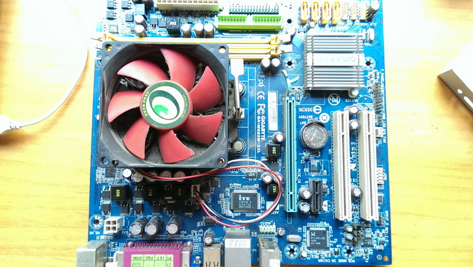
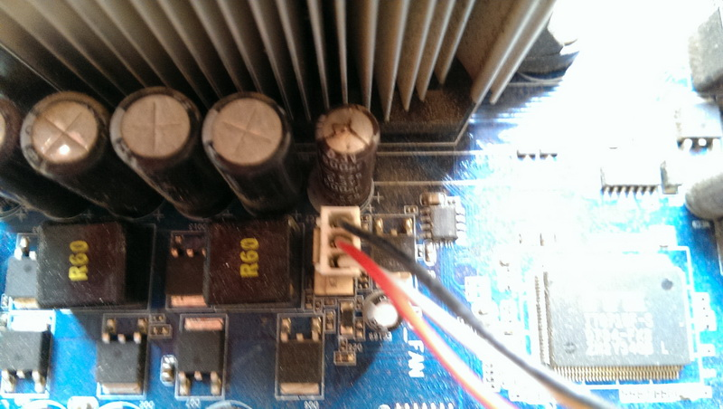
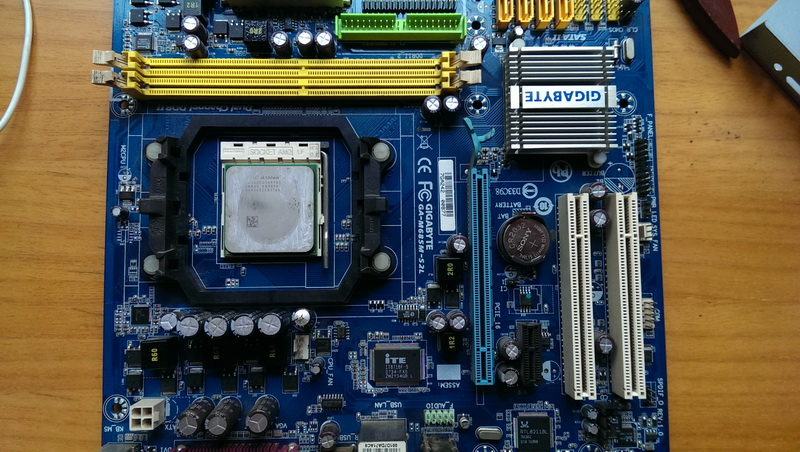
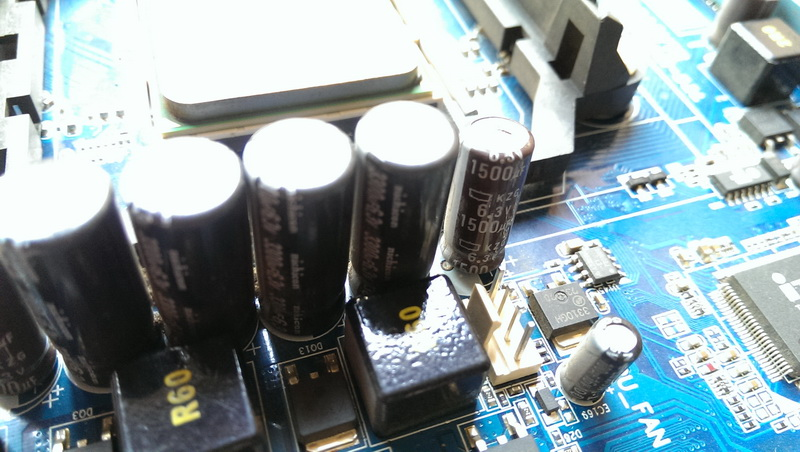
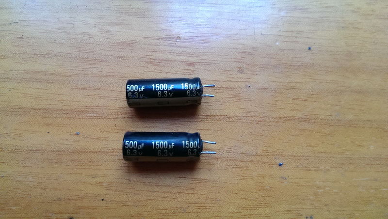
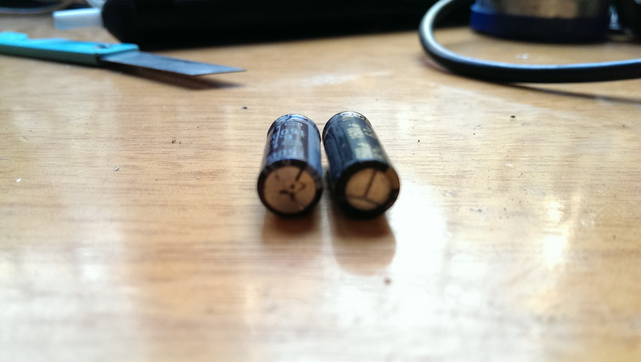
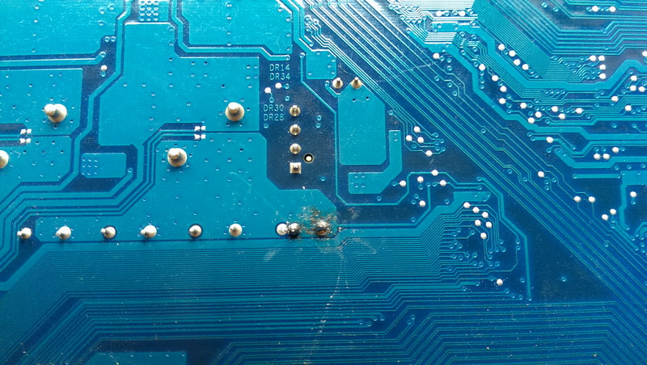
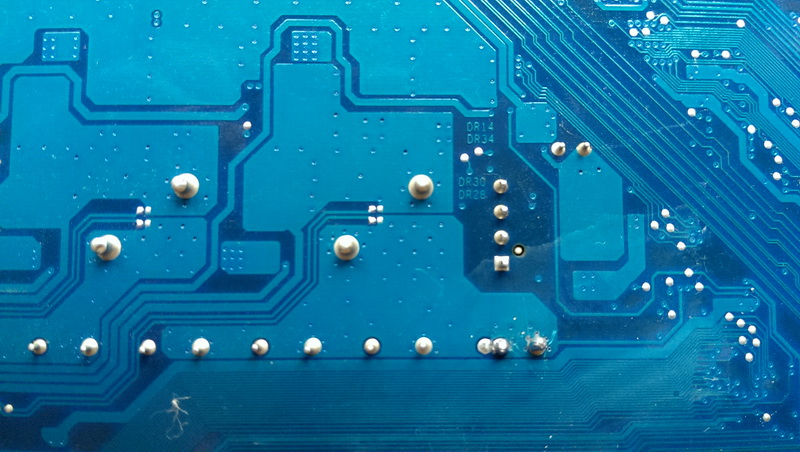
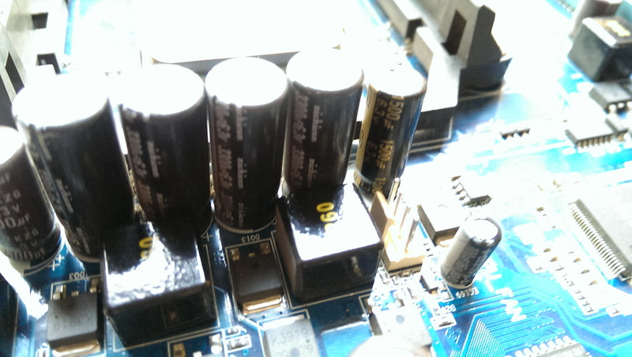
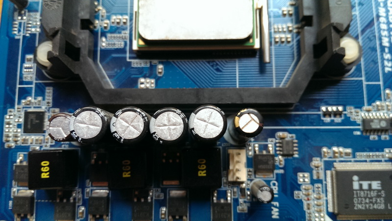

家里的电脑买了七、八年了，最近显示器突然出现了偶尔无法正常工作，桌面黑屏，画面无法刷新的情况。
首先怀疑是显卡问题，但是该主板没有独立显卡，是集成显卡，所以问题也就转移到了主板了。

仔细观察了一下主板上的电容，发现果然有一个爆浆了，如图。记下规格：6.3V 1500μF。

下面是具体维修步骤：
从机箱上卸下主板，卸下风扇，将灰尘清理干净

焊下爆浆的电容

用烙铁拆卸电容是一定要注意，因为主板制造工艺与一般家电不同，大部分烙铁无法轻松地将其焊下来，所以最好使用加焊法，即同时给两个焊点加焊至熔化，然后轻轻取下。
然后从旧主板上拆下两个同型号的电容，当然也可以从电子城买到。


左边是爆浆的电容，右边是好电容
焊上好的电容
焊接前最好用大头针将主板孔清理干净，然后将电容轻轻插入，注意正负极。加松香、焊锡焊接。

焊好后用酒精擦除掉残留的松香。

最终效果图


成功点亮，问题解决